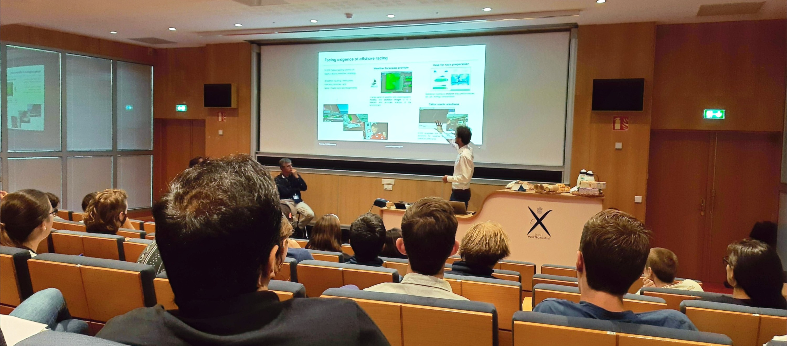
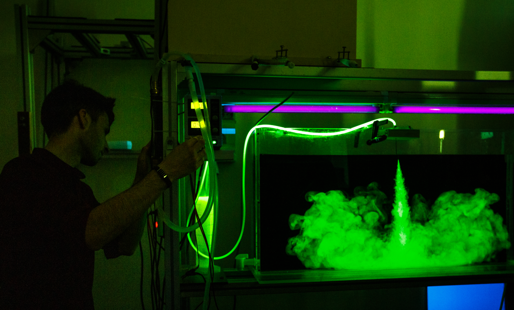
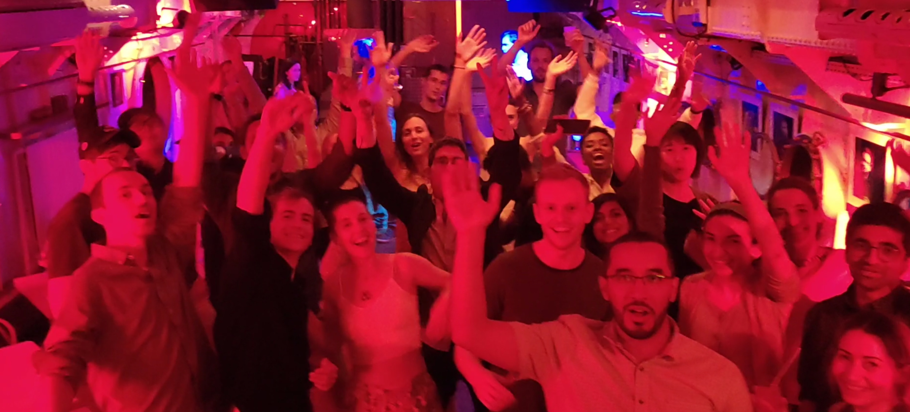

Starting with the full form of the title: FDSE translates to Fluid Dynamics of Sustainability and the Environment. This year it was held at École Polytechnique, Paris; next year, it will take place at the University of Cambridge, UK. I was fortunate to be a part of the batch of 2022 and have experienced two beautiful weeks. Ever since, I have been meaning to write something for future enthusiasts, so here it goes.
Principally, even though it is a summer school delineating the details of what it is called by definition, I felt it was way more. For enthusiasts of fluid dynamics just entering their graduate life or further into it, FDSE is possibly the best two weeks of all-round experience one can ask for. It is neither a conference nor a meeting — an environment just perfect for learning, networking (beyond professional, at times), and having fun in a semi-professional/casual setting. One gets to stay, learn, dine, party, and even end up playing football with some of the lecturers in the program. How cool is that!

Group photo. Credit: FDSE 2022
The details of the academic parts of the school are already mentioned on their website; hence, I will focus on an overall description of what to expect from your two weeks there rather than repeating the same. I will also streamline it into different headings for better flow!
A day in the life of …
The day begins with waking up and breaking your nightly fast with your classmates at some designated place near your residence, wherein you talk and connect over the table, eventually heading out for lectures somewhere inside the university campus. Thereafter, a series of talks follow based on the schedule already shared with you. At some point, there is a VERY important COFFEE break because the day has started early, and some of us are bats. It is also a chance to review the posters your classmates have put up in the hallway and learn about their work. Lunch is another time to connect — this time also with some of the big shots of fluid dynamics who have come to share their knowledge with you. The second half of the day is usually practical/experimental sessions which are more hands-on and involved. At the end of work, there is dinner and free time, which one may use to just relax or play football, but on other days some recreational activities like barbecues, poster sessions, and documentary screenings are planned. The day is usually packed enough that you just go back to your residence at night and fall asleep!
Topics and activities
Various topics are covered at this summer school under the following categories: experiments, numerical exercises, lectures, and group discussions. The core topics include fundamental, planetary, environmental, oceanic, atmospheric, and cryospheric fluid dynamics, flow instabilities, and renewable energy sources based on fluid flows. These are interspersed with stand-alone invited talks on special topics ranging from open science and IPCC reports to high-resolution climate modelling. I particularly enjoyed a very unique round-table discussion amongst representatives of different companies that harvest energy from natural fluid flows.
In experiments, one usually gets to perform two of the several designed for students and, at the end of the school, present their work in front of everyone else. This alternates every afternoon with numerical exercises. I worked on carbon dioxide sequestration (Darcy's Law) and surface gravity waves, but in general the variety of fields is such that everyone has significant overlaps with their own work and opportunities to learn new things. One of the things I found new and interesting was a range of experiments inspired by visual and audio arts. Well, where to expect such turbulent mixing of arts and sciences if not in Paris?

A typical day in class. Credit: self

Experiment with plumes. Credit: FDSE 2022
Fun and socializing
Fun activities include a welcome banquet, barbecues, poster sessions, documentary screenings, and a party. These are all informal settings to interact with any and all people involved with the program. Poster sessions accompany food — you can eat and learn simultaneously. One evening we had a screening of the documentary "Picture a Scientist" followed by a discussion on inclusivity and diversity in science. The first weekend is designated for a party (for us, it was on a boat on the river Seine), and the next two days to relax and tour around the city. A hostel was booked for us in the centre of Paris, and many of us visited different historic monuments and museums, finally returning to École Polytechnique on Sunday evening.

Barbecue evening. Credit: self
The people
Aside from all the top-notch academics, the most amazing thing about the school was the variety and diversity of students who attended the program. There were people from every continent (barring Antarctica, of course) and from every possible discipline related to fundamental fluid dynamics — starting from the spreading of forest fires, thin film flows, oceanography, and fluid mechanics of stars, to drones flying into storms to track them! It was also a fantastic opportunity to learn about the culture, language, and experiences of people from various parts of the world.
On the whole, I think anyone would be really happy to spend two weeks of vacation time and yet be extremely productive and gain knowledge while on it!
Here is the batch of 2022 greeting you from the Peniche (boat on the Seine)!

Credit: S. Fromang